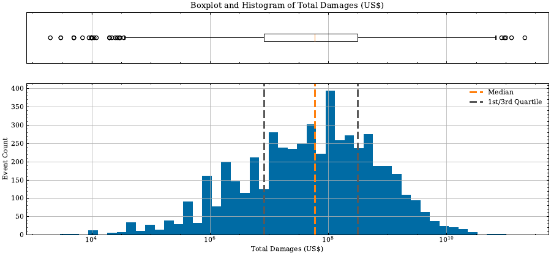

01
Fundamentals of Statistics & Probability
Descriptive and bivariate statistics, probability, Bayes' theorem.
Read →

From descriptive statistics to neural networks, on real natural-disaster data. It follows An Introduction to Statistical Learning by James, Witten, Hastie & Tibshirani.
Enter →git clone https://github.com/LarsBoecking/Statistical_Learning_TUM.git && cd Statistical_Learning_TUMpython -m venv .venv && source .venv/bin/activate # Windows: .venv\Scripts\activate
pip install -r requirements.txtLecture figures are generated by the notebooks in 02_lectures_code/; the exercises live in 03_exercises_code/. Launch Jupyter from a notebook's directory so the relative paths to configs/ and data/ resolve.
Statistical Learning (FIM), module WI001287, taught at the TUM School of Management by the Chair for Information Systems and Human-centric Artificial Intelligence. Content developed by Lars Böcking.
An Introduction to Statistical Learning
James · Witten · Hastie · Tibshirani